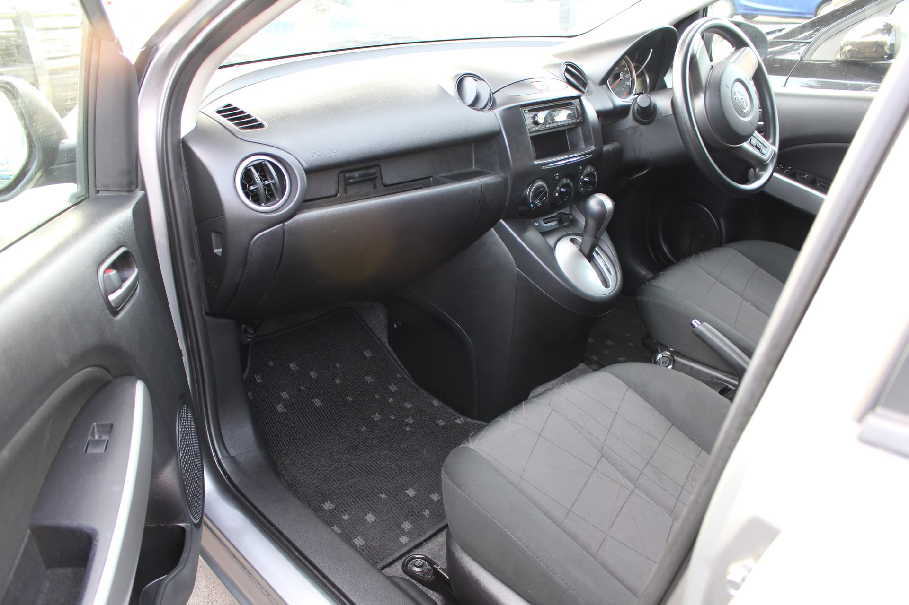

Driving on the wrong side of the road

When I picked up the rental car this morning, the rental agent spent a minute or two going over the rules of the road in New Zealand and then I watched a 5 minute video that also went over the rules. Most of the rules are the same as at home, wear your seat belt, no texting and driving, don't pass on a solid yellow line, etc. But, of course, the main thing is to drive on the left side of the road. There was a picture in the video that showed the countries that drive on the left and the ones that drive on the right. Based on this picture, the left side is definitely the wrong side!
So, after the short bit of education, the agent gave me the keys and I promptly walked over to the left side of the car and opened the door. What a shock! This is just wrong looking.
So, I went to the right side, got in and adjusted everything and headed out. I just kept telling myself, "stay on the left". Of course, just to add to the confusion, they have lots of roundabouts too! It is taking a lot of concentration, but I am starting to get the hang of it. The thing I have found to be hardest, is that the turn signals are on the right side of the steering wheel so I keep turning on the windshield wipers when I try to signal. Oh, and when I went to pick up Cristina, I had to turn on the lights and started the windshield wipers for the back window instead. The good part about it is that it is a constant reminder that I need to pay attention to what lane I am in.
Speaking of driving, not only did I get to really start driving on the wrong side of the road, Mother Nature decided to add a downpour to the mix. The 2 hour drive to Waitomo took 2 and a half hours. I'm starting to get used to the driving, but even the New Zealanders seem to need to be reminded to drive on the left. There are signs and arrows everywhere reminding them.